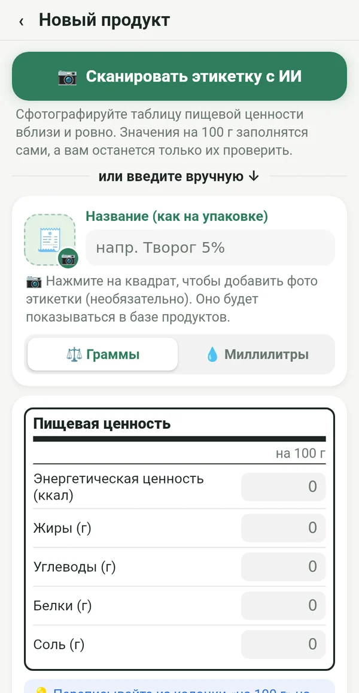
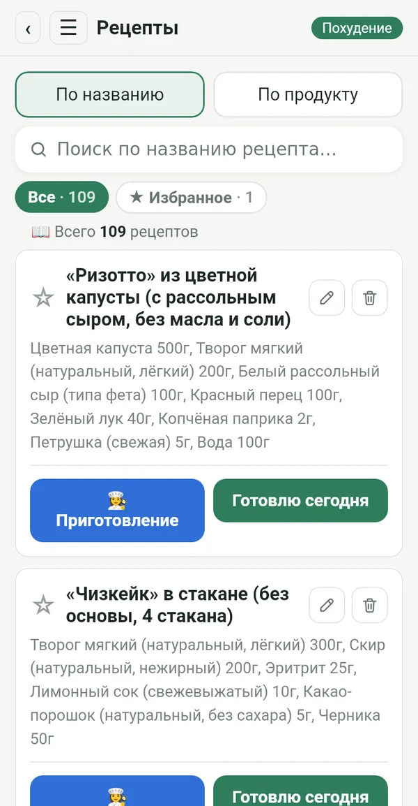
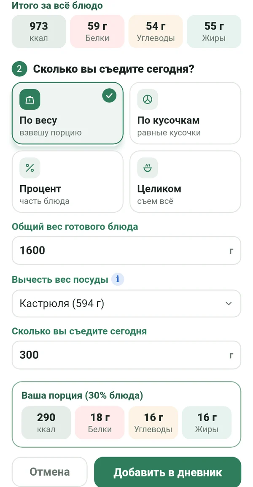
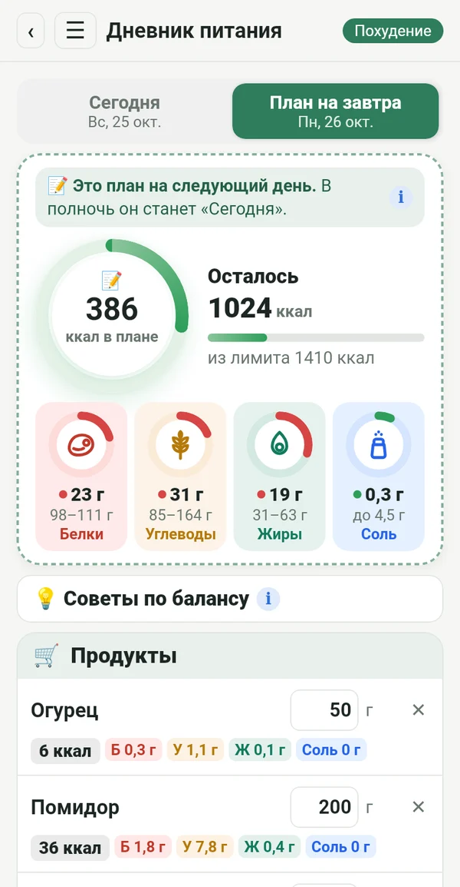
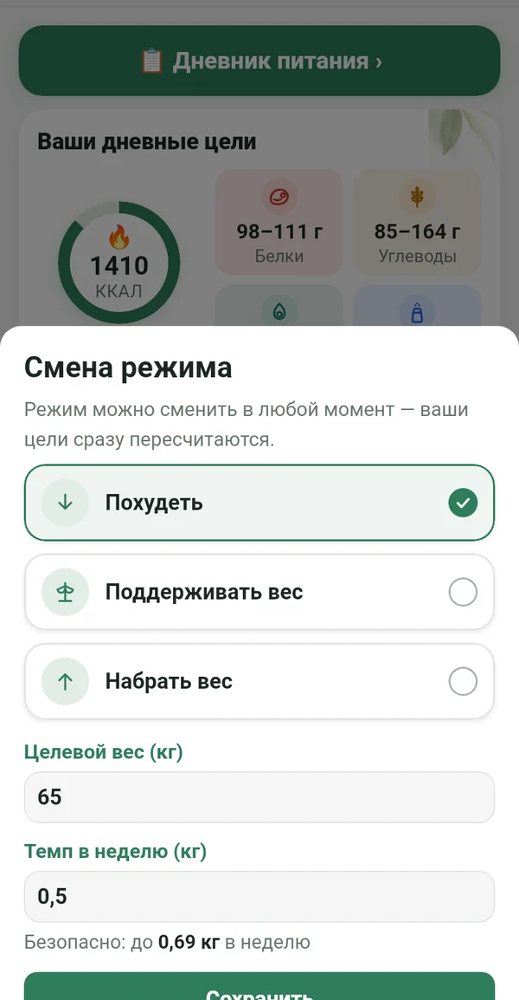
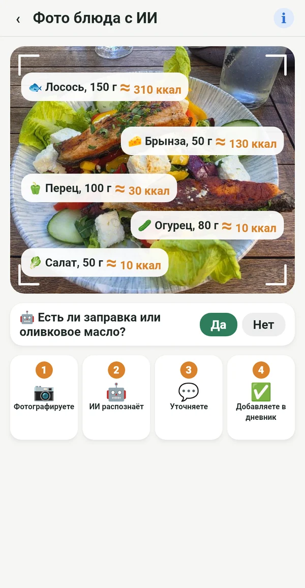

Всё, что нужно, и ничего лишнего

С этикетки, а не из чужих баз
Перепишите значения на 100 г с упаковки или просто сфотографируйте этикетку. Цифры совпадают с тем, что вы действительно едите.
📷 Фото этикетки с ИИ заполнит поля за вас
Ваша электронная кулинарная книга
Рецепты из бабушкиной тетради, из кулинарных книг на полке и из любимых групп, всё в одном месте. Вносите один раз и пользуетесь всегда.

Точная порция из всей кастрюли
Взвесьте готовое блюдо вместе с посудой. Macrolia вычтет вес кастрюли и посчитает, сколько именно вы съели.

Планируете, покупаете, едите
Уже сегодня вносите, что будете есть завтра. Покупаете только нужное, а в полночь план становится вашим днём.

Похудение, поддержание или набор веса
Достигнув цели, переходите на «Поддерживать вес». Если жизнь меняется, просто смените режим. Дневной лимит рассчитывается по формуле Миффлина-Сан Жеора и клиническим рекомендациям, в безопасном темпе.

И вне дома вы знаете, что едите
Сфотографируйте тарелку, и ИИ распознает, что на ней. Значение приблизительное и отмечено ≈. Лучше приблизительно, чем никак.
Калории от движения
Через Health Connect: с телефона, часов или фитнес-приложения. Вы выбираете, сколько добавить к лимиту.
Вес, график, отчёт
График веса, фото «до и после» только для вас и отчёт в PDF и Excel.
Советы по балансу
Короткие подсказки, когда белки или жиры выходят за цель. Помогает, а не командует.
Для каждой, кто хочет оставаться в режиме
Йо-йо не от режима. Оно приходит, когда ты останавливаешься.
После малыша ты снова входишь в режим.
Возраст не повод сдаваться.
И в ресторане ты знаешь, что заказать.
Кто точно соблюдает план, получает точный результат.
Ваши данные принадлежат только вам
Всё остаётся на вашем телефоне. Без регистрации, рекламы и отслеживания. Фото для анализа ИИ отправляется только для расчёта и не хранится.
Подписка
Месячная или годовая подписка, обе с 7 бесплатными днями. Отменить можно в любой момент в Google Play.
На 14 языках, со светлой и тёмной темой.
Вопросы
Когда выйдет приложение?
Мы готовим запуск в Google Play. Напишите нам, и мы сообщим, когда всё будет готово.
Есть ли версия для iPhone?
Пока только для Android. Версия для iPhone запланирована позже.
Почему нет сканера штрихкодов?
Базы штрихкодов заполняют пользователи, и в них часто ошибки или устаревшие данные. В Macrolia каждое значение берётся с этикетки, поэтому цифры точные.
Сколько фото с ИИ можно сделать?
До 100 фото в месяц, для этикеток и блюд вместе.